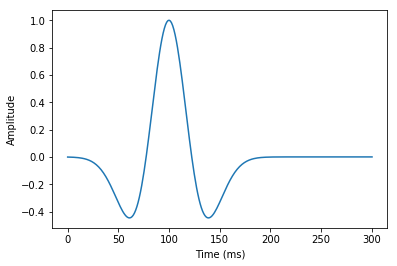
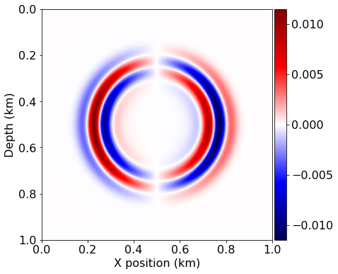
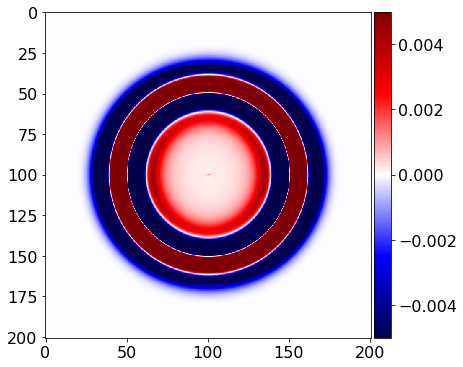
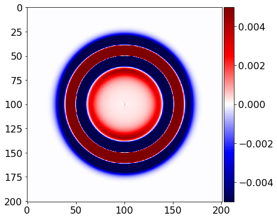
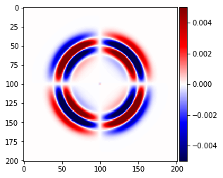
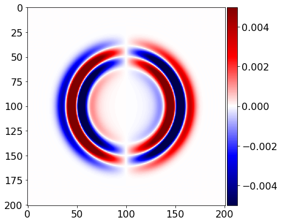
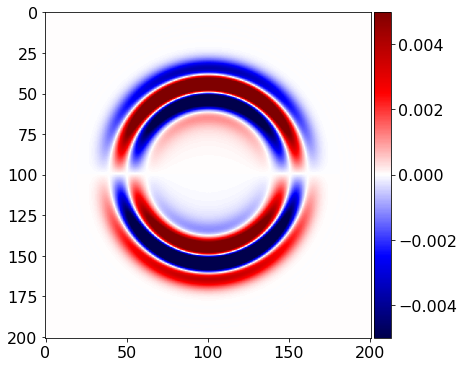
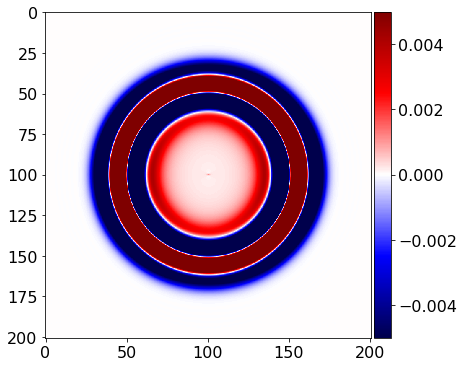
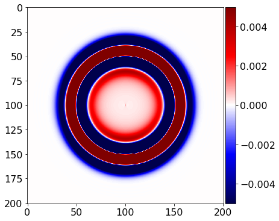
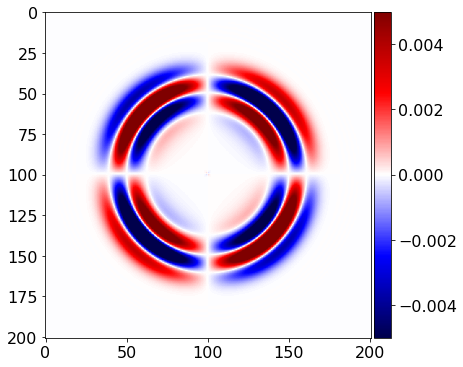

06 bis - Elastic wave equation implementation on a staggered grid
This is a first attempt at implemenenting the elastic wave equation as described in:
[1] Jean Virieux (1986). ”P-SV wave propagation in heterogeneous media: Velocity‐stress finite‐difference method.” GEOPHYSICS, 51(4), 889-901. https://doi.org/10.1190/1.1442147
The current version actually attempts to mirror the FDELMODC implementation by Jan Thorbecke:
[2] https://janth.home.xs4all.nl/Software/fdelmodcManual.pdf
Explosive source
We will first attempt to replicate the explosive source test case described in [1], Figure 4. We start by defining the source signature g(t), the derivative of a Gaussian pulse, given by Eq 4:
from devito import *
from examples.seismic.source import WaveletSource, RickerSource, GaborSource, TimeAxis
from examples.seismic import plot_image
import numpy as np
from sympy import init_printing, latex
init_printing(use_latex='mathjax')
# Initial grid: 1km x 1km, with spacing 100m
extent = (1500., 1500.)
shape = (201, 201)
x = SpaceDimension(name='x', spacing=Constant(name='h_x', value=extent[0]/(shape[0]-1)))
z = SpaceDimension(name='z', spacing=Constant(name='h_z', value=extent[1]/(shape[1]-1)))
grid = Grid(extent=extent, shape=shape, dimensions=(x, z))
class DGaussSource(WaveletSource):
def wavelet(self, f0, t):
a = 0.004
return -2.*a*(t - 1/f0) * np.exp(-a * (t - 1/f0)**2)
# Timestep size from Eq. 7 with V_p=6000. and dx=100
t0, tn = 0., 300.
dt = (10. / np.sqrt(2.)) / 6.
time_range = TimeAxis(start=t0, stop=tn, step=dt)
src = RickerSource(name='src', grid=grid, f0=0.01, time_range=time_range)
src.coordinates.data[:] = [750., 750.]
#NBVAL_SKIP
src.show()

# Now we create the velocity and pressure fields
so = 2
v = VectorTimeFunction(name='v', grid=grid, space_order=so, time_order=1)
tau = TensorTimeFunction(name='t', grid=grid, space_order=so, time_order=1)
# Now let's try and create the staggered updates
t = grid.stepping_dim
time = grid.time_dim
# We need some initial conditions
V_p = 2.0
V_s = 1.0
density = 1.8
# The source injection term
src_xx = src.inject(field=tau.forward[0,0], expr=src)
src_zz = src.inject(field=tau.forward[1,1], expr=src)
# Thorbecke's parameter notation
cp2 = V_p*V_p
cs2 = V_s*V_s
ro = 1/density
mu = cs2*density
l = (cp2*density - 2*mu)
# First order elastic wave equation
pde_v = v.dt - ro * div(tau)
pde_tau = tau.dt - l * diag(div(v.forward)) - mu * (grad(v.forward) + grad(v.forward).transpose(inner=False))
# Time update
u_v = Eq(v.forward, solve(pde_v, v.forward))
u_t = Eq(tau.forward, solve(pde_tau, tau.forward))
op = Operator([u_v] + [u_t] + src_xx + src_zz)
u_v
\displaystyle \left[\begin{matrix}\operatorname{v_{x}}{\left(t + dt,x + \frac{h_{x}}{2},z \right)}\\\operatorname{v_{z}}{\left(t + dt,x,z + \frac{h_{z}}{2} \right)}\end{matrix}\right] = \left[\begin{matrix}dt \left(0.555555555555556 \frac{\partial}{\partial x} \operatorname{t_{xx}}{\left(t,x,z \right)} + 0.555555555555556 \frac{\partial}{\partial z} \operatorname{t_{xz}}{\left(t,x + \frac{h_{x}}{2},z + \frac{h_{z}}{2} \right)} + \frac{\operatorname{v_{x}}{\left(t,x + \frac{h_{x}}{2},z \right)}}{dt}\right)\\dt \left(0.555555555555556 \frac{\partial}{\partial x} \operatorname{t_{xz}}{\left(t,x + \frac{h_{x}}{2},z + \frac{h_{z}}{2} \right)} + 0.555555555555556 \frac{\partial}{\partial z} \operatorname{t_{zz}}{\left(t,x,z \right)} + \frac{\operatorname{v_{z}}{\left(t,x,z + \frac{h_{z}}{2} \right)}}{dt}\right)\end{matrix}\right]
#NBVAL_IGNORE_OUTPUT
op(dt=dt)
Operator `Kernel` ran in 0.19 s
PerformanceSummary([(PerfKey(name='section0', rank=None),
PerfEntry(time=0.175716, gflopss=0.0, gpointss=0.0, oi=0.0, ops=0, itershapes=[])),
(PerfKey(name='section1', rank=None),
PerfEntry(time=0.009343000000000011, gflopss=0.0, gpointss=0.0, oi=0.0, ops=0, itershapes=[]))])
#NBVAL_SKIP
# Let's see what we got....
plot_image(v[0].data[0], vmin=-.5*1e-1, vmax=.5*1e-1, cmap="seismic")
plot_image(v[1].data[0], vmin=-.5*1e-2, vmax=.5*1e-2, cmap="seismic")
plot_image(tau[0, 0].data[0], vmin=-.5*1e-2, vmax=.5*1e-2, cmap="seismic")
plot_image(tau[1,1].data[0], vmin=-.5*1e-2, vmax=.5*1e-2, cmap="seismic")
plot_image(tau[0,1].data[0], vmin=-.5*1e-2, vmax=.5*1e-2, cmap="seismic")




#NBVAL_IGNORE_OUTPUT
assert np.isclose(norm(v[0]), 0.6285093, atol=1e-4, rtol=0)
# Now that looks pretty! But let's do it again with a higher order...
so = 12
v = VectorTimeFunction(name='v', grid=grid, space_order=so, time_order=1)
tau = TensorTimeFunction(name='t', grid=grid, space_order=so, time_order=1)
# The source injection term
src_xx = src.inject(field=tau.forward[0,0], expr=src)
src_zz = src.inject(field=tau.forward[1,1], expr=src)
# First order elastic wave equation
pde_v = v.dt - ro * div(tau)
pde_tau = tau.dt - l * diag(div(v.forward)) - mu * (grad(v.forward) + grad(v.forward).transpose(inner=False))
# Time update
u_v = Eq(v.forward, solve(pde_v, v.forward))
u_t = Eq(tau.forward, solve(pde_tau, tau.forward))
op = Operator([u_v]+ [u_t] + src_xx + src_zz )
#NBVAL_IGNORE_OUTPUT
v[0].data.fill(0.)
v[1].data.fill(0.)
tau[0,0].data.fill(0.)
tau[0,1].data.fill(0.)
tau[1,1].data.fill(0.)
op(dt=dt)
Operator `Kernel` ran in 0.13 s
PerformanceSummary([(PerfKey(name='section0', rank=None),
PerfEntry(time=0.12092999999999998, gflopss=0.0, gpointss=0.0, oi=0.0, ops=0, itershapes=[])),
(PerfKey(name='section1', rank=None),
PerfEntry(time=0.005271000000000005, gflopss=0.0, gpointss=0.0, oi=0.0, ops=0, itershapes=[]))])
#NBVAL_SKIP
# Let's see what we got....
plot_image(v[0].data[0], vmin=-.5*1e-2, vmax=.5*1e-2, cmap="seismic")
plot_image(v[1].data[0], vmin=-.5*1e-2, vmax=.5*1e-2, cmap="seismic")
plot_image(tau[0, 0].data[0], vmin=-.5*1e-2, vmax=.5*1e-2, cmap="seismic")
plot_image(tau[1,1].data[0], vmin=-.5*1e-2, vmax=.5*1e-2, cmap="seismic")
plot_image(tau[0,1].data[0], vmin=-.5*1e-2, vmax=.5*1e-2, cmap="seismic")





#NBVAL_IGNORE_OUTPUT
assert np.isclose(norm(v[0]), 0.62521476, atol=1e-4, rtol=0)